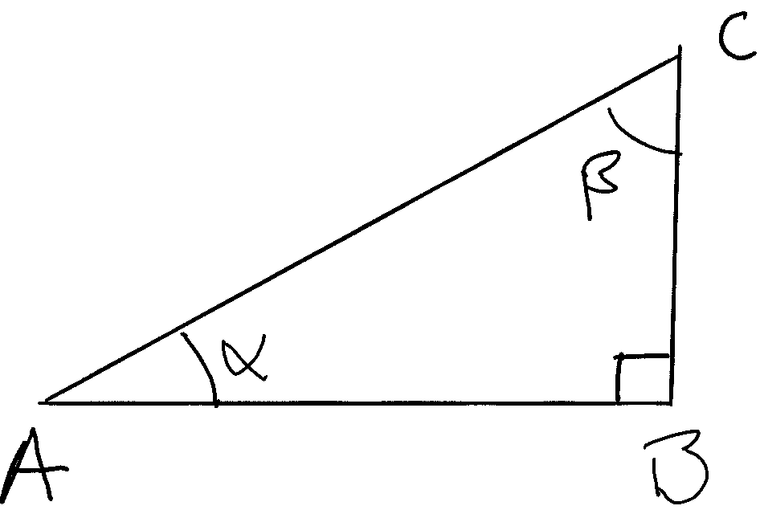
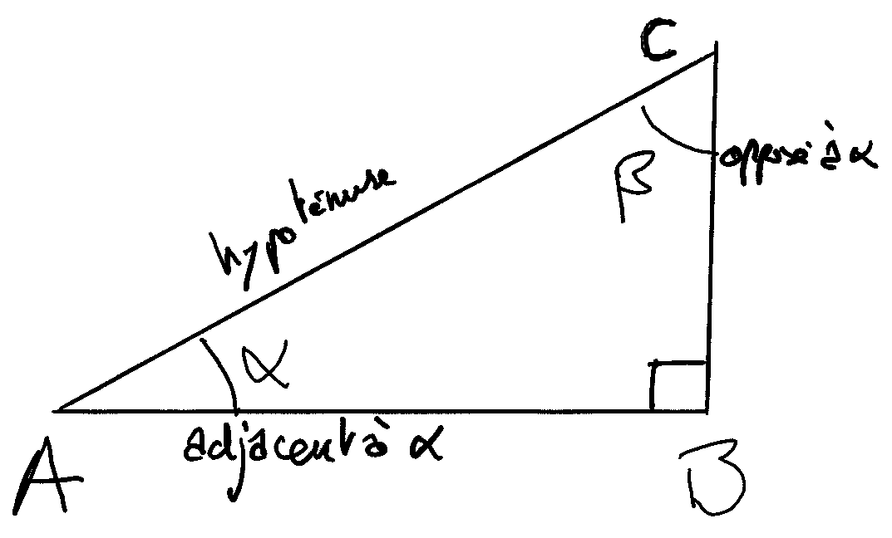
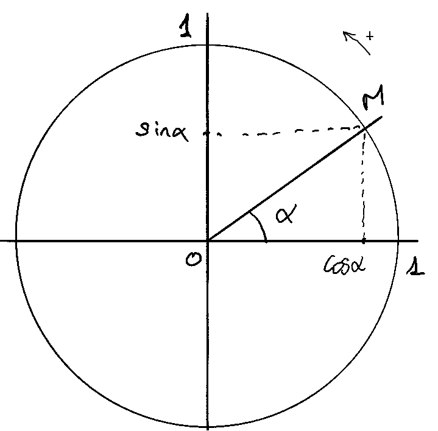
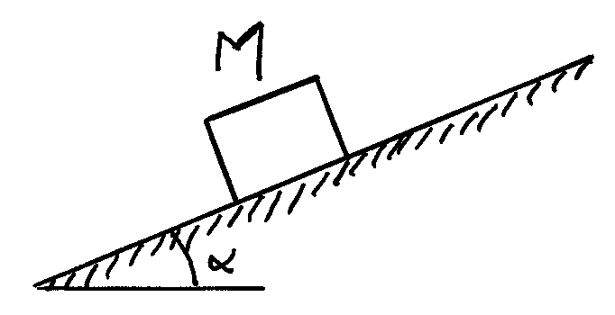
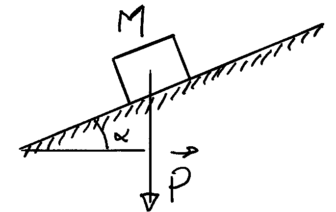
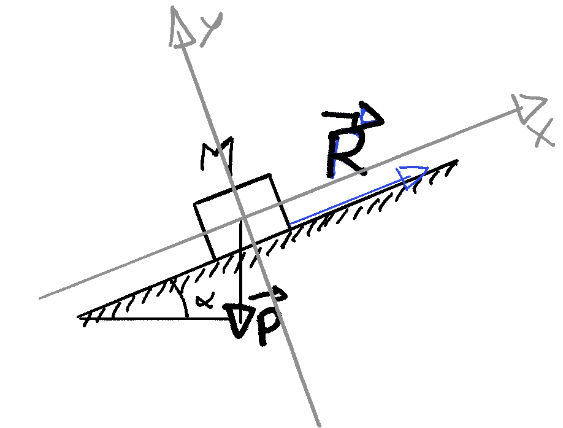
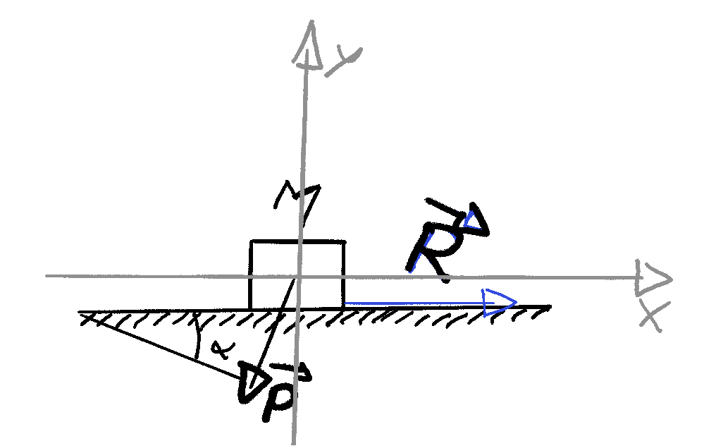
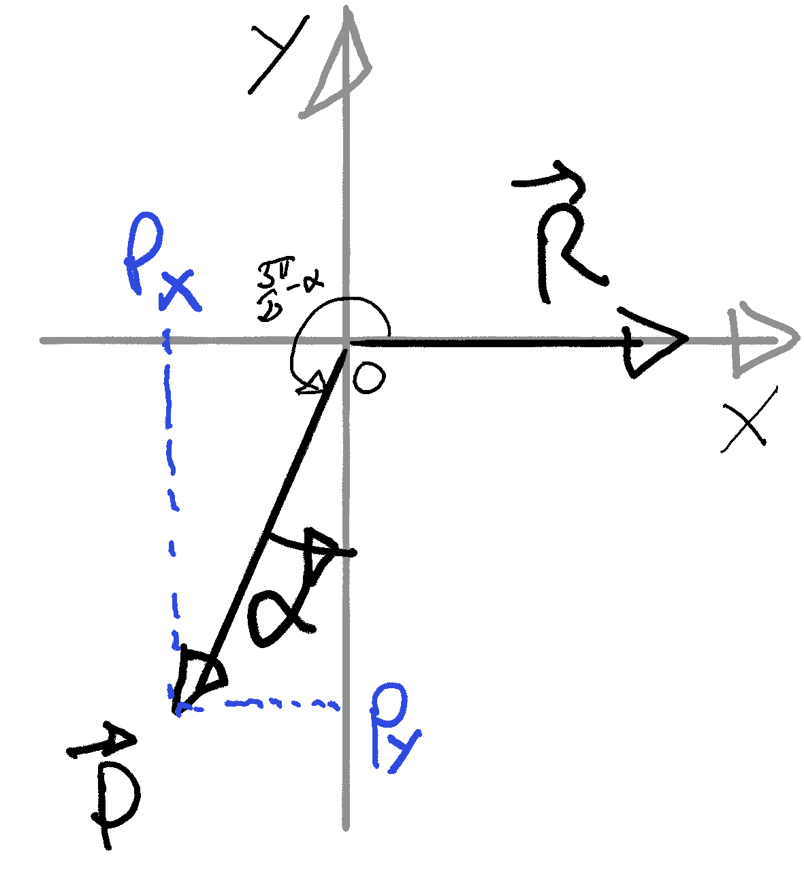
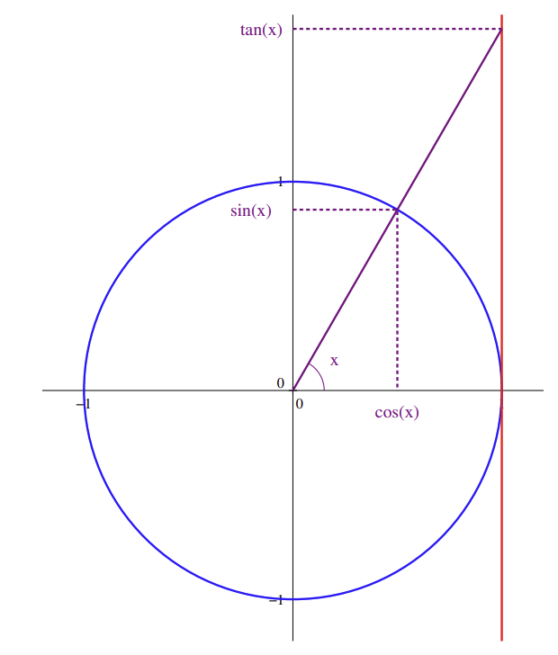

En mathématiques on aime pouvoir mettre en relation, comparer différentes sortes de mesures et de normes. Dans le cas de la trigonométrie, ce domaine est plus souvent mal aimé que vénéré.
Dans une première approche, on peut voir la trigonométrie comme un outil qui permet de comparer angles et longueurs.
Les différents outils de la trigonométrie sont exposés dans différents contextes pour ces outils pour permettre de les présenter le plus clairement et intuitivement possible.
Dans cette page, on se place dans un triangle rectangle pour commencer, puis dans un cercle unitaire centré en l'origine d'un repère.
Puis on donne les définitions des différents objets de la trigonométrie dans ces différents contextes et pour finir en tant que fonctions réelles.
Ce premier cadre naturel pour introduire les outils de la trigonométrie est le triangle rectangle.
On rappelle que dans un triangle la somme des angles vaut $\pi$.
Dans un triangle rectangle, le côté le plus long est toujours le côté opposé à l'angle droit et est appelé l'hypoténuse.
On a dans ce triangle la relation de Pythagore qui dit que le carré de l'hypoténuse vaut la somme des carrés des deux autres côtés.
On considère un triangle $ABC$ rectangle en $B$.
Dans ce triangle on choisit le point $A$ par exemple avec l'angle formé par les deux côtés $[AB]$ et $[AC]$.

Donc on considère cet angle que l'on appelle $\alpha$.

Dans ce triangle, soient les longueurs : $AB$ et $AC$. Si on calcule le rapport des longueurs du côté adjacent à l'angle sur l'hypoténuse, soit :$\dfrac{AB}{AC}$, alors on obtient ce que l'on appelle le cosinus de l'angle.
Autrement dit le cosinus est un rapport de longueurs.
Pour le calcul d'un cosinus, à l'aide de rapports de longueurs, on doit impérativement se placer dans un triangle rectangle.
De la même manière on peut définir le sinus, qui lui sera le rapport du côté opposé à l'angle sur l'hypoténuse, soit $\dfrac{BC}{CA}$.
Dans ce triangle $ABC$ on a donc définit cosinus et sinus:
$\cos \alpha = \dfrac{AB}{AC}$ : le cosinus est le rapport de la longueur du coté adjacent à l'angle sur l'hypoténuse.
$\sin \alpha = \dfrac{BC}{AC}$ : le sinus d'un angle est le rapport de la longueur du coté opposé à l'angle sur l'hypoténuse.
Exercice: Ecrire les cosinus et sinus de $\beta$.
Exercice: Trouver une relation entre le cosinus de $\alpha$ et le sinus de$ \beta$ - indication : écrire les formules et observer les résultats.
La tangente est la troisième fonction trigonométrique de base à connaître. Elle est définie par le rapport du sinus et du cosinus.
On a pour $\alpha$ du triangle rectangle du début et $AC \neq 0$ qui est équivalent de dire que $\alpha \neq \pi / 2 + k \pi \, \, , \, \, k \in \mathbb{Z}$:
$$ \tan \alpha = \dfrac{\sin \alpha}{\cos \alpha} = \dfrac{BC}{AC} $$
La tangente est utile notamment quand on dispose d'un longueur et d'une hauteur et pas de l'hypoténuse. On peut alors trouver un angle. Inversement, si on a un angle et une distance, ceci permet de trouver une hauteur.
Exemple. J'ai un immeuble à 100 mètres de moi dont je veux savoir la taille. Si je sais que pour regarder le sommet de l'immeuble mon regard fait un angle de $\pi/6$ avec l'horizontale je peux alors avoir une mesure de sa taille grâce à la tangente.
On pose $h$ la hauteur du bâtiment et $d$ la distance au bâtiment. Comme $\tan 30 = \sqrt{3}/3$ et $\tan 30 = \dfrac{h}{d}$
On trouve que $ h = d . \tan \pi/6= 100.\sqrt{3}/3=57,735026919$.
Ce qui donne un peu plus de $57$ mètres pour la hauteur du bâtiment.
Un autre contexte adéquat pour décrire cosinus et sinus est le cercle triginométrique, centré sur l'origine d'un repère orthonormal de rayon un. On pose de plus le sens anti horaire étant le sens positif.
Pour généraliser on se place dans un cercle de rayon $1$ et centré en l'origine.

Cette image nécessite quelques précisions.
On se place dans un repère orthonormé, d'origine $O$. point sur lequel est centré un cercle de rayon $1$. On place un point $M$ quelconque sur ce cercle.
$OM$ est un rayon du cercle. Il est de taille $1$.
Les coordonnées de $M$ sont les projections de ce point sur les deux axes. Ces projection sont obtenues à l'aide de l'angle $\alpha$ et de la longueur de $OM$ qui ici valant $1$ n'apparaît pas dans les calculs.
Donc on obtient les coordonnées de $M$ :
Sur l'axe horizontal on projette la longueur $OM$ pour obtenir le cosinus de $\alpha$. $\cos \alpha = \dfrac{x_M}{OM}$. Comme $OM =1$ on a $x_M = \cos \alpha $
De la même manière l'axe vertical on projette la longueur $OM$ pour obtenir le sinus de $\alpha$. $\sin \alpha = \dfrac{y_M}{OM}$. Comme $OM =1$ on a $y_M = \cos \alpha $
\[ M=\begin{pmatrix} x_M = \cos \alpha\cr y_M = \sin \alpha\cr \end{pmatrix} \]
En mécanique on étudie le mouvement des choses et les forces qui peuvent leur être appliquées. Concrètement ici nous allons prendre un exemple concret en calculant la force nécessaire à un véhicule pour en tracter un autre, aux forces en jeu pour tenir un objet suspendu entre deux colonnes, poser un objet sur un plan incliné. On fera pour l'instant abstraction de la force de répulsion du plan incliné, pour les puristes.
On va voir comment d'un système physique on peut en découvrir les principes de fonctionnement à l'aide des vecteurs en jeu. Notamment en regardant les forces en jeu.
Un plan incliné est représenté de profil par une droite coupant l'horizontale selon un angle $\alpha$.

Sur ce plan incliné on place un mobile $M$.

Ce mobile est soumis à son poids $\overrightarrow{P}$. Si on considère que le plan incliné n'oppose aucune force de friction, le mobile $M$ descend le long de la pente.

On suppose que le plan incliné n'est pas parfaitement glissant. Lorsque $M$ est posé dessus on admet que les frottements empêchent $M$ de glisser vers le bas de la pente. On représente donc par $\overrightarrow{R}$ la force de résistance du plan incliné.

$M$ subit deux forces, son poids et la résistance du plan incliné. On dispose de deux vecteurs, on se place donc dans un repère pour obtenir les coordonnées des vecteurs en fonction de leur norme (l'intensité de chaque vecteur) et de leur incidence, l'angle auquel ils sont appliqués.

On place le repère correctement.

Et on ne conserve que les vecteurs.

On peut donc obtenir les coordonnées des vecteurs selon : $||\overrightarrow{P}||$, $||\overrightarrow{R}||$ et $\alpha$. Cet angle permet d'exprimer les coordonnées de ces deux vecteurs dans le repère.

Caractérisons $\overrightarrow{P}$ et $\overrightarrow{R}$.
$||\overrightarrow{P}|| = mg$. Son angle avec l'axe des $x$, l'horizontale, vaut $3\pi/2-\alpha$.
$\overrightarrow{R}$ est dans le sens des $x$ positifs : son angle avec l'axe des $x$ vaut $0$ radian. On pose $||\overrightarrow{R}||$ sa norme.
On obtient donc pour $\overrightarrow{P}$: \[ \overrightarrow{P}=\begin{pmatrix} x_P = mg \cos (3\pi/2-\alpha)\cr y_P = mg \sin (3\pi/2-\alpha)\cr \end{pmatrix} \]
Et pour $\overrightarrow{R}$: \[ \overrightarrow{R}=\begin{pmatrix} x_R = ||\overrightarrow{R}|| \cos 0\cr y_R = ||\overrightarrow{R}|| \sin 0 \cr \end{pmatrix} \] Et donc : \[ \overrightarrow{R}=\begin{pmatrix} x_R =||\overrightarrow{R}||\cr y_R = 0\cr \end{pmatrix} \]
||\overrightarrow{R}|| n'a qu'une action dans le sens de la pente, de la valeur de sa norme.Application à un cas concret
On se place dans le cas suivant.
On a un plan incliné, dont al surface offre suffisamment de frottements pour supporter au maximum 500 Newtons, autrement dit ||RB MAX|| = 500. $M$ pèse 75 kilogrammes.
Ce plan incliné a une position $\alpha = \pi/6$ par rapport à l'axe horizontal dans le sens des $x$ positifs.
Convertissons la masse de $75$ Kg en Newtons. On rappelle que le poids est en Newton et la masse en Kilogrammes.
Comme P = m·g, alors ||P|| = 75 × 9,81 = 735,75.
Cas 1 : $\alpha = \pi/6$On a donc :
$$\vec{P} \left( \begin{array}{l} P_x = 735{,}75 \times \cos\left(\frac{3\pi}{2} - \frac{\pi}{6}\right) \\[4pt] P_y = 735{,}75 \times \sin\left(\frac{3\pi}{2} - \frac{\pi}{6}\right) \end{array} \right) \Rightarrow \frac{3\pi}{2} - \frac{\pi}{6} = \frac{4\pi}{3} \qquad \cos\frac{4\pi}{3} = -\frac{1}{2} \quad \sin\frac{4\pi}{3} = -\frac{\sqrt{3}}{2}$$ $$\vec{P} = \begin{pmatrix} -\tfrac{1}{2}\,(735{,}75) \\[4pt] -\tfrac{\sqrt{3}}{2}\,(735{,}75) \end{pmatrix}$$ $$\text{Donc } \vec{P} = \begin{pmatrix} -367{,}875 \\[4pt] -637{,}178 \end{pmatrix}$$$|P_x| = 367{,}875 < 500$, donc pour cette mesure d'angle, M ne bouge pas.
Cas 2 : $\alpha = \pi/3$On a toujours $\lVert \vec{P} \rVert =\mathbf{735{,}75}$;N. Position $\alpha = \frac{\pi}{3}$.
On a; en rempalcçant l'angle par $\pi/3$ :
$$\vec{P} \left( \begin{array}{l} P_x = 735{,}75 \times \cos\left(\frac{\pi}{2} - \frac{\pi}{3}\right) \\[4pt] P_y = 735{,}75 \times \sin\left(\frac{\pi}{2} - \frac{\pi}{3}\right) \end{array} \right) \Rightarrow \frac{\pi}{2} - \frac{\pi}{3} = \frac{\pi}{6} \qquad \cos\frac{\pi}{6} = \frac{\sqrt{3}}{2} \quad \sin\frac{\pi}{6} = \frac{1}{2}$$ $$\vec{P} = \begin{pmatrix} \tfrac{\sqrt{3}}{2}\,(735{,}75) \\[4pt] \tfrac{1}{2}\,(735{,}75) \end{pmatrix}$$ Donc: $$ \vec{P} = \begin{pmatrix} 637{,}178 \\[4pt] 367{,}875 \end{pmatrix}$$$|P_x| = 637{,}178 > 500$, donc pour cette mesure d'angle, $M$ bouge : la composante du poids le long du plan incliné dépasse la résistance maximale du sol.
Conclusion : M reste immobile pour $\alpha = \frac{\pi}{6}$, mais glisse pour $\alpha = \frac{\pi}{3}$.
En passant de $\frac{\pi}{6}$ à $\frac{\pi}{3}$, soit de $30°$ à $60°$ on imagine bien qu'il y un moment ou l'objet va commencer à chuter le long de la pente. La composante du poids en $x$ passe en valeur absolue de $367,875 \, N$ à $637,178 \, N$. La projection du poids le long du plan croît avec l'angle ($\cos\alpha$) pendant que la composante normale décroît ($\sin\alpha$).
--------------------------------------------
Un exemple de simulateur ici
Dans ce triangle $ABC$
On a :
$\cos \alpha = \dfrac{AB}{AC}$ : le cosinus est le rapport de la longueur du coté adjacent à l'angle sur l'hypoténuse.
$\sin \alpha = \dfrac{BC}{AC}$ : le sinus d'un angle est le rapport de la longueur du coté opposé à l'angle sur l'hypoténuse.
$$ \tan \alpha = \dfrac{\sin \alpha}{\cos \alpha} = \dfrac{BC}{AC} $$
Si $M$ est un point du plan et que l'on connaît la distance $OM$ et l'angle $\alpha$ entre l'axe des abscisses et le vecteur $\overrightarrow{OM}$. Soit : $(\vec{i};\overrightarrow{OM}) = \alpha$ si on le décrit comme un angle orienté.
Cosinus, sinus et tangente en un schéma
